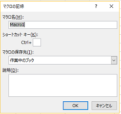

この章では VBA の基本的な内容を学習し、コードを記述するための
準備を進めて行きます。
Visual Basic for Application の略称で、Excel で動く VB です。
VB は Microsoft が開発したプログラミング言語で、Windows で
動くソフトウェアを開発するための言語です。
VBA を使う事で値を自動で処理したり、セルに関数を入力する事なく
関数を使用する事が可能となります。また、VBA を使って作成された
プログラムを「マクロ」と言います。
Visual Basic Editor の略称で、Excel で VBA を使うためのエディタです。
Alt + F11 で呼び出す事ができ、主にこの中でコードを記述していきます。
まずは Excel ファイルを作成し、Alt + F11 で VBE を開く事から始めましょう。
次の項目からは VBE の画面と操作方法を説明して行きます。
まずは VBE を設定して行きます。初期設定の状態でも利用可能ですが、
フォントや背景色の変更方法を認識してもらうため、解説します。
VBE 上部から、ツール > オプション > エディターの設定 をクリックします。
その後、以下の項目の値を変更しましょう。
・標準コード 前景：黄緑 背景：黒
・コメント 前景：黄緑 背景：黒
・キーワード 前景：水色 背景：黒
・識別子 前景：白 背景：黒
主に以下の用語を理解すれば ひと通りの VBA 操作が可能となります。
・VBA：Excel や Access で動くプログラミング言語
・マクロ：VBA で記述されたプログラム
・プロシージャ：マクロの最小単位
・ステートメント：プロシージャ内に記述される文
・キーワード：VBA に登録されている単語(予約語)
・コメント：マクロに影響を与えないメモ
・モジュール：マクロを作成するシート(場所)
・プロジェクト：モジュールの集合
・オブジェクト：ワークシート、セルなどの Excel の部品
・プロパティ：オブジェクトが持つデータ
・メソッド：オブジェクトを操作する時の命令
別の章での解説や、実際に使用してみて理解を深めましょう。
VBE でマクロを作成する第一段階は、標準モジュールの作成です。
左側のメニュー内のプロジェクトにカーソルを合わせたら、
右クリック → 挿入 → 標準モジュール の順番にクリックし、
新規のモジュールを作成しましょう。
モジュールを作成したら、右側のコードエリアにプロシージャを記述します。
以下のコードがプロシージャの基本構成です。
Sub プロシージャ名()
実行処理
End Sub
ポイントは、Sub ～ End Sub で囲む事と、プロシージャ名()を
記述する事です。また、VBE には自動変換機能と入力候補機能が
あるため、必ずしも手動で全て入力する必要はありません。
例えば「sub プロシージャ名」まで入力した後に、矢印キーの ↓ を
押すと、() と End Sub が補完されます。次の演習で練習しましょう。
「sub greeting + ↓ 」で自動変換
「ms + ctrl + space」で入力候補の MsgBox を選択して Tab キー
※ コメント部分は記述不要です。
Sub greeting()
'MsgBoxステートメントでメッセージボックスを表示
MsgBox "Hello World"
End Sub
上記の演習に MsgBox というキーワードがありました。これは関数と
よばれるもので、「目的の処理を実施するための Excel に元々用意
されている数式」を指します。SUM や Average のように、セルに数式
として入力可能な関数を「ワークシート関数」、VBA のみで利用可能な
関数を「VBA 関数」といいます。
オブジェクトに対して操作に関する命令をメソッドと説明しましたが、
関数も用いられます。適宜学習して行きましょう。
変数とはデータを格納する「箱」の役割を持つ文字列です。
格納する際はデータの種類である「型」を宣言します。
型を宣言する事で、変数に格納する値を制御する事が出来ます。
変数の設定には以下のルールがあります。
・スペースや記号は利用不可
・大文字、小文字の区別がない
データ型の宣言は、以下の記述を行います。
Dim 変数名 As データ型
データ型は以下の種類などがあります。
・Integer：整数型
・Long：長数型
・String：文字列型
・Object：オブジェクト型
・Boolean：論理型(True/False)
・Date：日付型
VBA の記述において、変数の宣言は必須ではありません。
しかし、コードミスを防ぐ手段でもあるため、本勉強会では
変数の宣言を推奨しています。次の演習を実行し、変数の
宣言を体験しましょう。
ツール > オプション > 編集タブ > 変数の宣言を強制する(R)をチェック
標準モジュールを右クリックして、標準モジュールを挿入
Option Explicit の記述がある事を確認し、以下のコードを記述して実行する。
Sub test()
i = 0
MsgBox i
End Sub
実行結果を確認後、以下のコードに修正して実行する。
Sub test()
Dim i As Integer
i = 0
MsgBox i
End Sub
この章では、オブジェクトについて学習します。一般的な
プログラミング言語にもオブジェクトの概念は出て来ますが、
VBA では少し違った定義を持つので、しっかりと理解していきましょう。
元々は「モノ・コト(対象)」の意味を持つ単語で、「性質や値を
所有するデータ群」と定義されます。詳細は後の章で解説しますが、
オブジェクトが持つデータの事をプロパティ、オブジェクトに対して
実行される操作をメソッドと言います。
人をオブジェクトと見なした場合、頭(オブジェクト)には
顔(オブジェクト)があり、顔(オブジェクト)には目、鼻、耳、口
といったオブジェクトが含まれます。プロパティの例としては、
「私の頭 > 顔 > 目の数 = 2 つ」と言えますし、メソッドの場合は
「私の頭 > 顔 > 口 > 歯 > 前歯 を治療する」と表す事が出来ます。
VBA では、処理の対象となるもの全てをオブジェクトと定義しています。
つまり、ワークシートやセルなど、通常の Excel 操作で利用するものを
オブジェクトと見なし、それぞれにオブジェクト名が設定されています。
VBA で利用可能なオブジェクトは 200 個を超えるので、まずは代表的な
オブジェクトについて学習して行きましょう。
Excel を対象とするオブジェクトで、VBA では最も大きい
オブジェクトと言えます。
Excel ブックを対象とするオブジェクトです。
「ワークシート」を対象とするオブジェクトで、シートの移動や
削除、シート名の変更などで指定されます。
セルを対象とするオブジェクトで、値の入力や削除、
計算結果の出力などで指定されます。後の章で解説する
Cells プロパティと合わせて、セルの指定に用いられます。
セル内の文字列の書式設定を表すオブジェクトで、サイズや
色、太字や下線などのプロパティを持ちます。
コレクションとは、オブジェクトの集合体を指します。
例えばブックには、ワークシートがたくさん含まれます。つまり、
上層のオブジェクト(親)に対して下層のオブジェクト(子)は
集合体であり、オブジェクト名の複数形でコレクションと
表す事が出来ます。以下は代表的なコレクションです。
・Worksheets コレクション：ワークシート
・Rows コレクション：セルの行
・Columuns コレクション：セルの列
なお、Range オブジェクトは、単体のセルも 複数のセルも含まれる
ため、Ranges コレクションは使用しません。注意しましょう。
実際にコードを書く際は、操作対象のオブジェクトを指定する必要があります。
その場合、いくつかのルールが定められています。
(1)親オブジェクトから順番に .(ドット)で繋げる
(2)アクティブなオブジェクトを指定する場合、親オブジェクトの記述は不要
(3)アクティブではないオブジェクトを指定する場合は、コレクションから
該当のオブジェクトを指定する。
実際のケースを見ながら学習して行きますので、現段階では頭に留める程度で
問題ないです。
Sub test1()
'アクティブなワークシートのセル範囲を指定
Range("A1:D5").Value = 100
Range("A1").Font.Bold = True
Range("B1").Font.Color = vbRed
End Sub
Sub test2()
'ワークシートコレクション内の1番目と2番目のシートを指定
Worksheets(1).Range("A1").Value = "ワークシート1"
Worksheets(2).Range("A1").Value = "ワークシート2"
End Sub
この章ではプロパティについて学習して行きます。セルの値入力など、
VBA 操作で必須の概念となりますので、しっかりと理解して行きましょう。
前章の説明で、オブジェクトには性質や値(プロパティ)が含まれると
お伝えしました。各オブジェクトには複数のプロパティが存在し、
対応するプロパティを指定して、値の取得や設定を行います。
また、プロパティには同じ名前で別のオブジェクトに利用可能な
もの(color プロパティ等)もありますので、頭に入れておきましょう。
プロパティはオブジェクトを対象に用いられます。そのため、
「オブジェクト.プロパティ」を基本の記述方法とします。
前章でも説明した通り、アクティブなワークシートやセルに
対して処理を行う場合、親オブジェクトは記述が不要です。
非アクティブなオブジェクトを対象とする場合、
「親オブジェクト.子オブジェクト.プロパティ」の様に
必要な分だけ 「オブジェクト」と「.」を繋げます。
以下で解説する代表的なプロパティを学習し、プロパティの
使い方に慣れて行きましょう。
セルを指定するためのプロパティです。「Cells(行番号, 列番号)」
と記述する事でセルの場所を指定できます。非アクティブなセルを
する場合は、「Worksheet オブジェクト.Cells(行番号, 列番号)」
と記述します。
セルの値を表すプロパティです。Range オブジェクトや Cells
プロパティとセットで用いられ、セルの値の取得や、別の値の
入力が可能です。
Sub test1()
'Cellsプロパティでセルを指定、Valueプロパティで値を入力
Cells(1, 1).Value = 100
Cells(2, 2).Value = 200
Cells(3, 3).Value = 300
Cells(4, 1).Value = 400
End Sub
上記 2 つのプロパティは、いずれも利用頻度の高いプロパティです。
この先の演習でも出て来ますので、少しずつ慣れて行きましょう。
ワークシートの名前を返します。
色を取得または設定します。
列幅を指定します。
行の高さを指定します。
セルに数式を入力したり、入力されている数式を取得します。
セルの塗りつぶし属性を表し、Color プロパティと合わせる事で
セル色を指定する事ができます。
警告やメッセージの表示/非表示を設定します。False を設定する事で
警告がでなくなるため、ワークシートの削除時などに用いられます。
Sub test1()
Range("A1").Value = 100
Cells(5, 5).Interior.Color = vbRed
End Sub
Sub test2()
Worksheets(1).Range("A:C").ColumnWidth = 6
Worksheets(2).Range("A1").RowHeight = 50
End Sub
オブジェクトに対して指定する操作の事をメソッドと呼びます。記述方法は
プロパティと同様に「オブジェクト.メソッド」が基本となっています。
メソッドには引数を指定できる場合があります。引数とは、簡単に
説明すると「メソッドをより詳しく指定する値」と言えます。例えば、
「ワークシートを新しく追加する」というメソッドは、それだけでも
操作として成立していますが、引数を設定する事で「どのワークシートの、
どこ(前/後)に、いくつ追加する」という事を指定出来るようになります。
以下の代表的なメソッドを学習して行きましょう。
指定したセル範囲のデータをコピーします。Worksheet オブジェクトと
Range オブジェクトの両方で利用可能です。記述方法は、
「Worksheet オブジェクト.Copy Before/After」または
「Range オブジェクト.Copy 貼り付け先のセル」となります。
指定したセル範囲のデータを完全にクリアします。
指定した場所に新しいワークシートを追加します。
指定したワークシートを削除します。
Application オブジェクトに対して指定され、アクティブな
セルがあるワークシートを取得します。
指定したワークシートをアクティブにするメソッドです。
Sub test1()
Range("A1").Value = 1
Range("A1").Copy Range("B1:D3")
End Sub
Sub test2()
Range("C2").Clear
End Sub
Sub test3()
'1番目のワークシートを、1番目のワークシートの後ろに複製する
'「After:=Worksheets(1)」は引数の指定
Worksheets(1).Copy After:=Worksheets(1)
End Sub
Sub test4()
Worksheets(1).Delete
End Sub
Speech オブジェクトまたは Range オブジェクトで指定された値を読み上げるメソッドです。
ユーザーに文字列や数値を入力させるダイアログボックスです。
指定した範囲のデータを印刷するためのメソッドです。
Sub announce()
Application.Speech.Speak "Please enter"
MsgBox "入力して下さい"
End Sub
Sub name_box()
Dim name_box As String
name_box = InputBox("名前を入力してください")
Range("C1") = name_box
End Sub
オブジェクト・プロパティ・メソッドについて学習して来ました。
マクロは主にこれらの組み合わせで構成されているため、基礎学習の
ひと区切りと言えます。改めておさらいしましょう。
オブジェクト：Excel を構成するパーツ(ワークシート、セルなど)
プロパティ：オブジェクトの性質・データ
メソッド： オブジェクトへの処理及び動作
また、VBA の基本文法は以下の 3 つに代表されます。
(1) オブジェクト.メソッド + 引数名:=引数
(2) オブジェクト.プロパティ = プロパティの値
(3) 変数 = オブジェクト.プロパティ / メソッド
次に説明する内容は、VBA をしっかりと理解するために必要な内容
ですが、分かりにくいと感じる場合は、ひとまず飛ばしても大丈夫です。
オブジェクトは Excel を構成するパーツで、プロパティはオブジェクトの
データであると説明しました。この内容に誤りはありませんが、正確には
もう少し説明が必要です。
オブジェクトとプロパティは同一の役割を果たす事があります。例えば、
Worksheets().Range()と記述した場合、Range はオブジェクトですが
プロパティでもあります。つまり、Worksheet オブジェクトに対して
Range プロパティを使用し、その結果 Range オブジェクトを取得しています。
Worksheetx().Cells()の場合も、Cells プロパティを使って、Range
オブジェクトを取得しています。
このように、プロパティがオブジェクトに対して反映された後、オブジェクト
として扱われる性質があるため、プロパティに対してプロパティを紐づける
事も可能です。
これまでの例では「Cells プロパティ.Value プロパティ(セルの値を取得)」や、
「Range オブジェクト.Interior プロパティ.Color プロパティ(セル色の塗りつぶし)」
などが該当します。
この章では、作業の自動化に必要な機能である「繰り返し処理」について
学習して行きます。
同じ処理を指定した回数繰り返すステートメントです。
[基本構文]
Sub 繰り返し()
Dim 変数 As Long
For 変数 = 開始 To 終了
処理
Next
End Sub
繰り返し処理の構文では、ループ回数をカウントする
カウント変数を設定します。そのため、初めに Dim
ステートメントで Long 型を宣言しています。その後は
変数を繰り返す回数を指定し、実行したい処理を Next
で囲んでいます。
早速ですが、次の演習を実行しましょう。
Sub for_test1()
Dim i As Long
For i = 1 To 10
Cells(i, 1).Value = 10
Next i
End Sub
Sub for_test2()
Dim i As Long
For i = 1 To 10
Cells(i, 2).Value = i
Next i
End Sub
カウンタ変数を i にして宣言し、1 から 10 を指定します。
実行処理は Cells オブジェクトに対して Value プロパティを
指定しているため、セル内に値が入力されます。
for_test1 プロシージャでは、A 列のセルに対して
「値 10 を 1 ～ 10 行まで入力」の処理を実行しています。
for_test2 プロシージャでは、B 列のセルに対して
「変数 i を 1 ～ 10 行まで入力」の処理を実行しています。
For Each Next は、コレクションや配列に対して繰り返し
処理を設定できる構文です。基本構文は以下のと通りです。
[基本構文]
Sub 繰り返し()
Dim 変数名 As 型
For Each 変数名 In オブジェクト
実行処理
Next
End Sub
変数にはオブジェクトが格納されます。次の演習で感覚を掴みましょう。
Sub sheet_named()
Worksheets.Add After:=Worksheets(1), Count:=2
Worksheets(1).Name = "first"
Worksheets(2).Name = "second"
Worksheets(3).Name = "third"
End Sub
Sub sheet_name_msg()
Dim name_msg As Object
For Each name_msg In Sheets
MsgBox name_msg.Name
Next
End Sub
sheet_named()プロシージャでは、Add メソッドを用いて
ワークシートを 2 枚追加しています。After は挿入する位置関係、
Worksheets(1)は対象のワークシート、count:=2 はシートの
枚数を指定しています。
sheet_name_msg()プロシージャでは、変数 name_msg をオブジェクト型で
宣言します。Fro Each で sheets オブジェクトを name_msg に格納し、
Name プロパティで取得したワークシートの名前をメッセージボックスに
表示させています。
前章では、繰り返し処理として、For Next 構文を学習しました。
VBA では、別の構文でも繰り返し処理を記述できますので、学習
して行きましょう。
この構文では設定された終了条件が True になるまで、
処理を繰り返す特徴があります。基本コードは以下となります。
Sub DoLoop()
Do
実行処理
Loop Until 終了条件
End Sub
For Next 構文では「1 to 10」のように、繰り返し回数が
指定されていました。Do Loop Until 構文では繰り返し
回数の指定がなく、終了条件が記述されます。
次の演習を実施し、Do Loop Until 構文に慣れて行きましょう。
Sub DoLoop_test1()
Dim i As Long
i = 0
Do
i = i + 1
MsgBox i
Loop Until i > 2
End Sub
マクロを実行すると、メッセージボックスが 3 回表示されました。
ループが 1 回処理される度に i が 1 ずつ増え、3 になったタイミングで
終了条件 i > 2 を満たしたため、ループが終わるという流れでした。
次は、もう少し実践的なコードを記述してみましょう。
Sub fill_cells1()
Range("A1:A10").Value = 1
Range("A1").Select
End Sub
Sub DoLoop_test2()
Do
ActiveCell.Interior.Color = vbYellow
Selection.Offset(1, 0).Select
Loop Until ActiveCell.Value = ""
End Sub
上記のマクロを実行すると、値を含むセルに対して色が黄色に
変更されました。詳細な解説は以下の内容になります。
・Range("A1").Select ：A1 セルを選択する
・ActiveCell オブジェクト：選択されたセルを指定する
・Interior：塗りつぶし属性を取得するプロパティ
・vbYellow：VBA の予約語の 1 つで、黄色を指定する
・Selection プロパティ：アクティブなウインドウで選択されているオブジェクト
この構文では設定された終了条件が False になるまで
処理を繰り返します。基本コードは以下となります。
Sub DoLoop()
Do
実行処理
Loop while 繰り返し条件
End Sub
Do Loop Until と異なるのは、繰り返し条件を指定する部分です。
次の演習を実施しましょう。
Sub all_clear()
Cells.Clear
End Sub
Sub fill_cells2()
Range("A1:A5").Value = 5
Dim i As Integer
For i = 1 To 5
Cells(i, 2).Value = i
Next i
End Sub
Sub do_loop_while()
Dim j As Integer
j = 1
Do
Cells(j, 3).Value = Cells(j, 1).Value * Cells(j, 2).Value
j = j + 1
Loop While Cells(j, 1).Value <> ""
End Sub
Loop While の後ろに記述した「Cells(j, 1).Value <> ""」は、
セルに何か値が入力されている状態 を意味しています。
そのため、セルが空白になるまで、処理が実行されます。
この章では、マクロ作成の要である条件分岐を学習します。
目的の処理を達成するために必要な要素を考えながら、
学習を進めて行きましょう。
「もし A であれば〇〇をする。B であれば □□ をする。」のように、
条件によって処理内容を変化させるしくみの事です。
条件分岐は VBA で機能を実装する際にとてもよく使われますので、
しっかり学習して行きましょう。
条件分岐の基本となる構文で、以下の記述が基本となります。
[基本構文]
Sub 条件分岐1()
If 条件式 Then
処理
End if
End Sub
条件式とは「もし〇〇であれば」の〇〇に当たり、
真偽値(True または False)が返ってくる必要があります。
まずは次の演習を実践して行きましょう。
Sub enter100()
Range("A1").Value = 100
End Sub
Sub if_sample1()
If Range("A1").Value = 100 Then
MsgBox "100が入っています。"
End if
End Sub
上記のコードは、A1 セルに 100 が入力されている場合にのみ、
処理を実行しました。次は、100 以外の値が入力されていた
場合に処理が実行される記述方法を学習します。
[基本構文]
Sub 条件分岐2()
If 条件式 Then
処理A
Else
処理B
End if
End Sub
条件に当てはまらない際の処理を記述するには、Else を追加します。
次の演習を実行して感覚を掴みましょう。
Sub enter10()
Range("A1").Value = 10
End Sub
Sub if_sample2()
If Range("A1").Value = 100 Then
MsgBox "100が入っています。"
Else
MsgBox "100以外が入っています。"
End if
End Sub
実行すると、Else 以下の処理が実行されました。
さらに複数の処理を記述する場合は、ElseIf を使用します。
[基本構文]
Sub 条件分岐3()
If 条件式1 Then
処理A
ElseIf 条件式2 Then
処理B
ElseIf 条件式3 Then
処理C
Else
処理D
End if
End Sub
別の処理を追加する場合は、ElseIf 条件式 Then を記述します。
それでは演習に進みましょう。
Sub test_score()
If Range("A1").Value > 90 Then
MsgBox "はなまるです！"
ElseIf Range("A1").Value > 70 Then
MsgBox "よくできました！"
ElseIf Range("A1").Value > 50 Then
MsgBox "まずまずです"
Else
MsgBox "もっとがんばりましょう"
End if
End Sub
前の章では、If Then を用いて条件分岐を学習しました。
この章では、複数の条件分岐を記述する方法を学習します。
入力値によってセルの色を変えるなど、複数の条件分岐を
設定する機会は多いと考えられます。その場合、Select Case
ステートメントを使用する事で、記述をシンプルにできます。
[基本構文]
Sub select_case_sample()
Select Case 条件式
Case 式の値1
処理1
Case 式の値2
処理2
Case 式の値3
処理3
Case Else
処理(その他)
End Select
End Sub
条件式には、条件分岐を判断するための式を設定し、
各「式の値」にはその式が返す値を指定します。
いずれの値も返さない場合は、Case Else の処理が
実行されます。次の演習で体験しましょう。
Sub test()
Dim i As Integer
For i = 1 To 6
Cells(i, 1).Value = i
Next i
End Sub
Sub select_case_sample1()
Dim j As Integer
For j = 1 To 6
Select Case Cells(j, 1).Value
Case 1
Cells(j, 2).Interior.Color = vbRed
Case 2
Cells(j, 2).Interior.Color = vbBlue
Case 3
Cells(j, 2).Interior.Color = vbYellow
Case 4
Cells(j, 2).Interior.Color = vbGreen
Case 5
Cells(j, 2).Interior.Color = vbCyan
Case Else
Cells(j, 2).Interior.Color = vbBlack
End Select
Next
End Sub
同じオブジェクトに対し、連続的に処理を行う際、簡略的に
記述するためのキーワードです。同一のオブジェクトを With で
囲み、オブジェクトの記述を省略できます。
[with ステートメント 1]
Sub with_sample1
with オブジェクト()
.プロパティa
.プロパティb
.プロパティc
End With
End Sub
・オブジェクト.プロパティ の オブジェクト部分を With の後ろに書く
・with ~ End With で囲む
・囲む部分はインデントを入れる
以上の 3 点です。
また、With ステートメントの中には更に With ステートメントを
入れ子にして記述する事が出来ます。
[with ステートメント 2]
Sub with_sample2
with オブジェクト()
with オブジェクト()
.プロパティa
.プロパティb
.プロパティc
End With
End With
End Sub
それでは次の演習を実行し、With ステートメントを勉強しましょう。
Sub with_sample1()
With Range("A1")
.Value = "Test1"
.Font.Name = "メイリオ"
.Font.Bold = True
.Font.Size = 30
End With
End Sub
Sub with_sample2()
With Range("A2")
.Value = "Test2"
With .Font
.Name = "MS ゴシック"
.Bold = False
.Size = 15
.Color = RGB(255, 0, 0)
End With
End With
End Sub
第 1 回 VBA 勉強会の最後に、マクロ記録について解説します。
マクロ記録とは Excel で行った操作をそのまま記録し、コードを
作成する機能の事です。操作内容によっては、記録されたコードを
そのまま利用できる場合もあるため、ひと通りの操作を学習しましょう。
手順開発タブの表示
ファイル > オプション > リボンのユーザー設定 > 開発のチェック
↓
(2)マクロ記録の開始
開発タブ > マクロの記録 > マクロの記録 > Excel操作
↓
(3)マクロ記録の終了
記録終了 > VBE > モジュールに保存されたマクロの確認
VBA 勉強会では、VBA の作成をメインに扱いますが、実際に
マクロを実装する際やツール作成に有用ですので、自分で
試してみましょう。また、マクロ記録には With ステートメントが
頻繁に出てくるため、その辺りも意識するとよいでしょう。